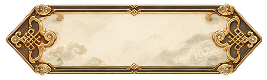
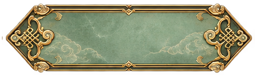
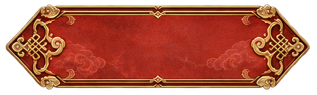

太 虚 · 宣 纸 墨 卷 / 02
查看装配后的完整 UI →纸上留白，云纹鎏边
宣纸与墨色承载界面，繁复纹样集中在按钮两端。折角、双层细边、如意云纹统一成一套，正文仍然留在安静的中央。
素纸次级操作 · 返回 · 取消
青玉主要操作 · 装备 · 开炉
朱砂仪式操作 · 破境 · 转修
常态NORMAL 悬停
HOVER 按下
PRESSED 禁用
DISABLED
上方文字均独立渲染。可将鼠标移到常态按钮上，再按住，体验实际状态变化。
不同宽度，端部花纹保持形状
组合在宣纸界面里
聚气丹
生灵草 ×2 凝露花 ×1 ／ 灵气消耗 8 ／ 成丹率 90%
透明素材实物
下方棋盘由网页绘制，只用于检查 Alpha。PNG 本身无棋盘、无文字，外围透明，纸／玉／朱砂底板保留不透明填充。


